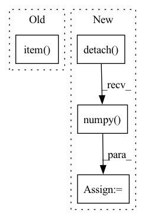

Pattern ID :5659

Before Change
// _, batch_preds = torch.max(out.data, 1)
// fin_loss += loss.item()
predicted_list.append(out.mean().item())
target_hr_list.append(data["target"].item())
return target_hr_list, predicted_list
After Change
target_hr_batch = list(data["target"].mean(dim=1, keepdim=True).squeeze(1).detach().numpy())
target_hr_list.extend(target_hr_batch)
predicted_hr_batch = list(outputs.squeeze(2).mean(dim=1, keepdim=True).squeeze(1).detach().numpy())
predicted_list.extend(predicted_hr_batch)
In pattern: SUPERPATTERN
Frequency: 4
Non-data size: 4
Instances
Fragment ID: 19879610
Project Name: anweshcr7/rhythmnet
Commit Name: 465030f9efb5f86a94572239a5147c1c667f24fd
Time: 2021-02-23
Author: anwesh.marwade@beyondsports.nl
File Name: src/engine.py
M Class Name: AnonimousClass
N Class Name: AnonimousClass
M Method Name: eval_fn(3)
N Method Name: eval_fn(3)
M Parent Class:
N Parent Class:
M File Name: src/engine.py
N File Name: src/engine.py
M Start Line: 37
M End Line: 51
N Start Line: 41
N End Line: 63
'>
Before Change
loss = 1 - mse_loss / torch.var(x)
out = {}
out["pVar"] = loss.detach().item()
out["W"] = ws_layer.forward_weights.detach().cpu().numpy()
out["mu"] = ws_layer.mu.detach().numpy()
out["r"] = ws_layer.r.detach().numpy()
out["W0"] = W0
After Change
if ws_layer.force_dale_law:
out["ratio_end"] = (np.mean(torch.sign(ws_layer.forward_sign).detach().cpu().numpy()) + 1) / 2
else:
out["ratio_end"] = (np.mean(torch.sign(ws_layer.forward_weights).detach().cpu().numpy()) + 1) / 2
return out
'>
Fragment ID: 19879609
Project Name: neurotorch/neurotorch
Commit Name: a19976d80f57c54d66a936925f12b6f25f452bb8
Time: 2022-09-28
Author: 50332514+JeremieGince@users.noreply.github.com
File Name: tutorials/time_series_forecasting_wilson_cowan/main_dale.py
M Class Name: AnonimousClass
N Class Name: AnonimousClass
M Method Name: train_with_params(20)
N Method Name: train_with_params(20)
M Parent Class:
N Parent Class:
M File Name: tutorials/time_series_forecasting_wilson_cowan/main_dale.py
N File Name: tutorials/time_series_forecasting_wilson_cowan/main_dale.py
M Start Line: 45
M End Line: 152
N Start Line: 51
N End Line: 168
'>
Before Change
if brain.args["discrete"] :
prob = brain.get_action(torch.from_numpy(state).float())
dist = Categorical(prob)
action = dist.sample().item()
else ://continuous
mu,std = brain.get_action(torch.from_numpy(state).float())
dist = Normal(mu,std)
action = dist.sample()
After Change
mu,std = brain.get_action(torch.from_numpy(state).float())
dist = Normal(mu,std)
action = dist.sample()
log_prob = dist.log_prob(action).sum(1,keepdim = True).detach().cpu().numpy()
next_state, reward, done, _ = env.step(action)
if get_traj :
transition = make_transition(np.array(state).reshape(1,-1),\
'>
Fragment ID: 19879607
Project Name: seolhokim/distributedrl-pytorch-ray
Commit Name: bd7df7ceb6f1fa1bc72da414b2e69ab434deab6b
Time: 2021-06-30
Author: kilmya1@naver.com
File Name: utils/run_env.py
M Class Name: AnonimousClass
N Class Name: AnonimousClass
M Method Name: run_env(5)
N Method Name: run_env(5)
M Parent Class:
N Parent Class:
M File Name: utils/run_env.py
N File Name: utils/run_env.py
M Start Line: 32
M End Line: 32
N Start Line: 26
N End Line: 49
'>
Before Change
loss.backward()
optimizer.step()
target_hr_list.append(data["target"].item())
predicted_list.append(outputs[2].mean().item())
fin_loss += loss.item()
return target_hr_list, predicted_list, fin_loss / len(data_loader)
After Change
target_hr_batch = list(data["target"].mean(dim=1, keepdim=True).squeeze(1).detach().numpy())
target_hr_list.extend(target_hr_batch)
predicted_hr_batch = list(outputs.squeeze(2).mean(dim=1, keepdim=True).squeeze(1).detach().numpy())
predicted_hr_list.extend(predicted_hr_batch)
fin_loss += loss.item()
'>
Fragment ID: 19879604
Project Name: anweshcr7/rhythmnet
Commit Name: 465030f9efb5f86a94572239a5147c1c667f24fd
Time: 2021-02-23
Author: anwesh.marwade@beyondsports.nl
File Name: src/engine.py
M Class Name: AnonimousClass
N Class Name: AnonimousClass
M Method Name: train_fn(4)
N Method Name: train_fn(4)
M Parent Class:
N Parent Class:
M File Name: src/engine.py
N File Name: src/engine.py
M Start Line: 12
M End Line: 28
N Start Line: 12
N End Line: 33